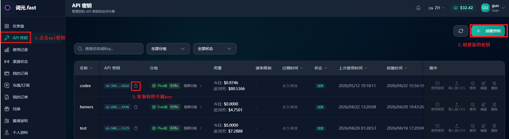

部署
异步生图接口 接入教程
词元.fast 异步生图接口文档。可以直接丢给 AI 助手，让它按接口说明帮你写接入代码。
API生图可交给 AI
异步生图接口使用说明
服务地址：https://img.ciyuan.fast。这份接口说明可以直接丢给 AI 助手，让它根据你的语言和框架生成接入代码。接口是异步流程：先创建任务，拿到 job_id，再轮询任务状态，成功后读取图片 URL。
接口概览
| 能力 | 接口 | 用途 |
|---|---|---|
| 文生图 | POST /v1/images/generations | 根据提示词创建生图任务 |
| 修改图片 / 图生图 | POST /v1/images/edits | 上传图片或传图片 URL 进行修改 |
| 查询任务 | GET /v1/image-jobs/:jobId | 查询 queued、running、succeeded、failed |
鉴权方式
Authorization: Bearer <你的API Key>创建任务和查询任务必须使用同一个 API Key。
文生图最简示例
curl -sS https://img.ciyuan.fast/v1/images/generations -H "Authorization: Bearer <你的API Key>" -H "Content-Type: application/json" -d '{"model":"gpt-image-1","prompt":"a clean product photo of a white ceramic mug","size":"1024x1024","n":1}'查询任务
curl -sS https://img.ciyuan.fast/v1/image-jobs/imgjob_xxx -H "Authorization: Bearer <同一个API Key>"图生图 / 修改图片
curl -sS https://img.ciyuan.fast/v1/images/edits -H "Authorization: Bearer <你的API Key>" -F "model=gpt-image-1" -F "prompt=make the background white" -F "size=1024x1024" -F "image[]=@./input.png"轮询建议
建议每 2 到 5 秒查询一次任务状态，不要高频轮询。如果系统需要稳定保存图片，拿到 URL 后建议立即下载并转存。
补充图文步骤
补充步骤 1
密钥创建通用步骤
先打开词元.fast 并登录，进入控制台的令牌管理/API Key 页面。点击添加令牌或创建密钥，名称可以写当前工具名。创建成功后立刻复制密钥，后面所有工具里的 API Key、Token、访问令牌都粘贴这一串内容。
